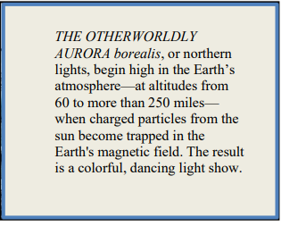

THE OTHERWORLDLY AURORA borealis, or northern lights, begin high in the Earth's atmosphere—at altitudes from 60 to more than 250 miles— when charged particles from the sun become trapped in the Earth's magnetic field. The result is a colorful, dancing light show The Aurora Borealis, more commonly referred to as the Northern Lights is a natural phenomenon created when particles emitted by the sun interact with the atomsphere in the Earth's magnetic field.
The first time I filmed an auora was from an icebreaker near Antarctica. Luckily, there are much more accessible places if you'd like to take in these light shows yourself. For the best seats to this celesial scene, consider anywhere with a magnetic latitude above 55 and low light polluton. Find your magnetic latitued on NOAA and here or by using a sky guide app.